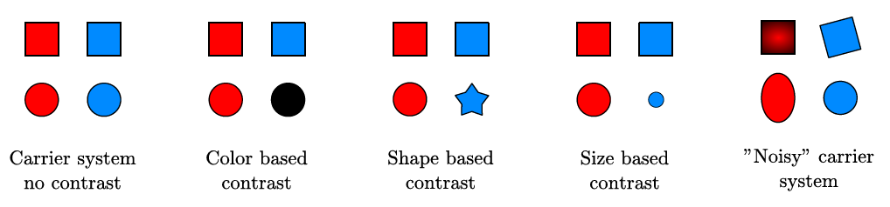
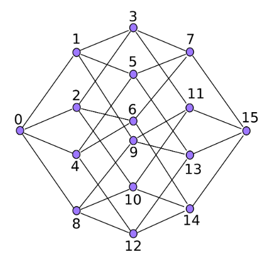
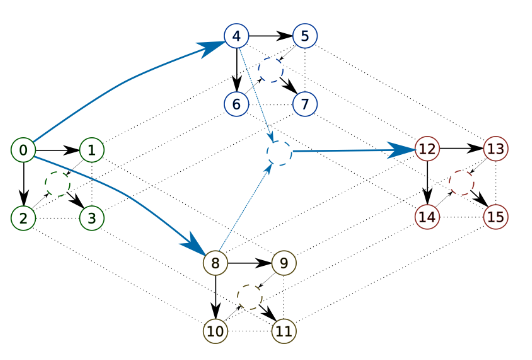
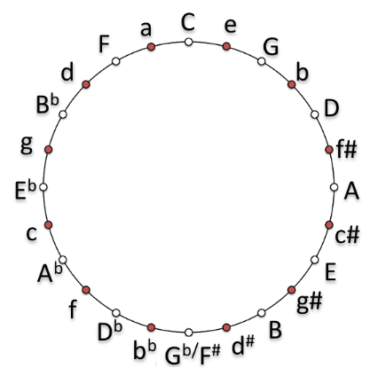
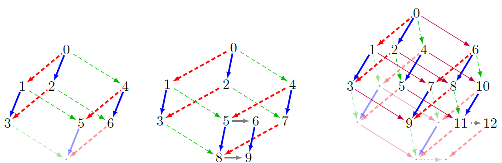

Polytopic Representation of Music.
Polywhat?
A polytope is a mathematical object, with no consensual definition. Then, let's redefine it! (yay!)Here, we will restrict "polytope" to n-cubes, or altered n-cubes. More particularily, we will only focus on the set and edges of the polytope, which is called the "polytope graph" in the litterature. Polytopes, in our context, fall into 2 classes:
- Regular polytopes
- - These will simply cover the generalizattion of cubes. Hence, a 3-regular polytope is a cube, a 2-regular-polytope is a square, and a 4-regular-polytope is a tesseract, or hypercube.
- Irregular polytopes
- - n-regular-polytopes on which we have added and/or deleted a smaller polytope (at most (n-2)-regular-polytopes). Typically, a cube where we deleted a vertex is an irregular polytope.
But first, let's start with another model: the System and Contrast.
S&C: System and Contrast model [1]
The S&C model is a model which links 4 elements. The first 3 will represent a system, and the 4-th will be compared to the 3 others, to form a contrast (which can be null).Before a more precise explanation, take a look at the follwoing picture (from [3]).  In the previous examples, we infer a logical sequence from the 3 first elements, and try to predict the 4-th element in this logic.
The "logical sequence" is the system, and the difference between the prediction and the "real" 4-th element is the contrast.
Formally, let x1, x2, x3 and x4 be a 4 element sequence. We will try to find two functions from it:
- - f, where x2 = f(x1)
- - g, where x3 = g(x1)
The contrast is then f(g(x1)) - x4.
Finally, if x1, f, g and the contrast are quantitative (we assume that they are in our context), we can define a S&C cost of our sequence:
cost(sequence) = cost(f) + cost(g) + cost(contrast)
Regular polytopes [2]
Note: for now, all the presented models (and also the figures) come from C. Louboutin's work (principaly [2], but also his thesis [3]).
We present below a 4-regular-polytope (an hypercube).  This polytope has 16 vertices, indexed from 0 to 15, with edges connecting some of them.The idea is to put, on each vertex, a musical element (typically, a chord). In a 4/4 time metric, 4 bars represents 16 beats.
Let's take a musical passage of 4 bars, each containing 4 beats. We will represent each beat of this passage as a vertex in the polytope, by simplifying the content in each beat to a unique chord (the principal one).
Hence, our polytope now define a 16 elements musical passage. Great! But what's the point?
The trick is that this 4-regular-polytope can also be seen as 5 systems of 4 elements: 4 systems linking 4 consecutive elements (0/1/2/3, 4/5/6/7, 8/9/10/11 and 12/13/14/15), and a 5-th system linking the first elements of these systems (0/4/8/12).  Hence, this 4 bars passage be seen as 5 S&C models.
Et voilà ! By summing the costs of each of these systems, we have defined a cost for this musical passage.
Well, almost. What is the cost of the relations between elements when talking about musical passages?
Many costs can be implemented, but the most simple one (maybe) would be to reduce each chord on each vertex to its closest triad, and then consider the difference between two chords as a rotation in the circle of thirds (presented below).  And what about audio signals?
Well, that's actually my contribution! But it's still TODO work... If this subject interests you, fell free to contact me at axel.marmoret_at_irisa.fr for a potential collaboration! :)
Irregular polytopes [4]
Regular polytopes are great, but what can we do when segments aren't of size 2**n (4, 8, 16, 32)?For this task, C. Guichaoua introduced irregular polytopes. Some of them are presented below.  Basically, it allows us to define a polytope for a lot (but not all!)* of segments sizes.
The challenging work here is to extend the previous S&C model to non-4 elements (done in the seminal paper, but not on Corentin's work) and to adapt this to audio signals (as before).
*I don't want to detail their generation here, but basically, as we only alter regular polytopes with other regular polytopes, some size remain inaccessible.
Code
Python code for this work, mixing both models, is available at this link (for symbolic music only, for now).It's still under development, and lacks of (a lot) of explanations, but it's a first step, and soon it will be more understandabme! I'll then encourage you to play with it! :)
References
[1] Bimbot, F., Deruty, E., Sargent, G., & Vincent, E. (2016). System & contrast: A polymorphous model of the inner organization of structural segments within music pieces. Music Perception: An Interdisciplinary Journal, 33(5), 631-661.[2] Louboutin, C., & Bimbot, F. (2017, June). Polytopic Graph of Latent Relations: A Multiscale Structure Model for Music Segments.
[3] Louboutin, C. (2019). Modélisation multi-échelle et multi-dimensionnelle de la structure musicale par graphes polytopiques (Doctoral dissertation, Rennes 1).
[4] Guichaoua, C. (2017). Modèles de compression et critères de complexité pour la description et l'inférence de structure musicale (Doctoral dissertation).